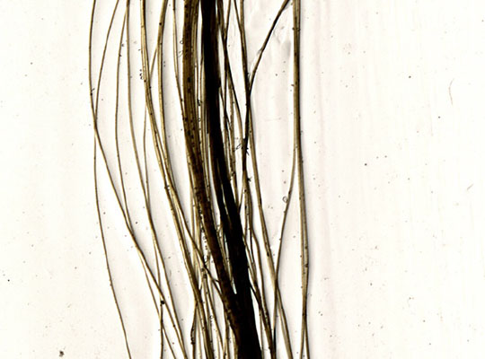

Be brave my love !
Year
2005
Materials
Video, collage on filmroll, hair
Dimension
3’
Description
The film Be Brave my Love ! is made of an unused roll of film to which thousands of pieces of hair have been affixed. It offers two modalities of presentation: it is both a movie (immaterial) and a film (physical). A film is an organic material (gelatin is made of bones) whose movement captures life in a fragile eternity.
